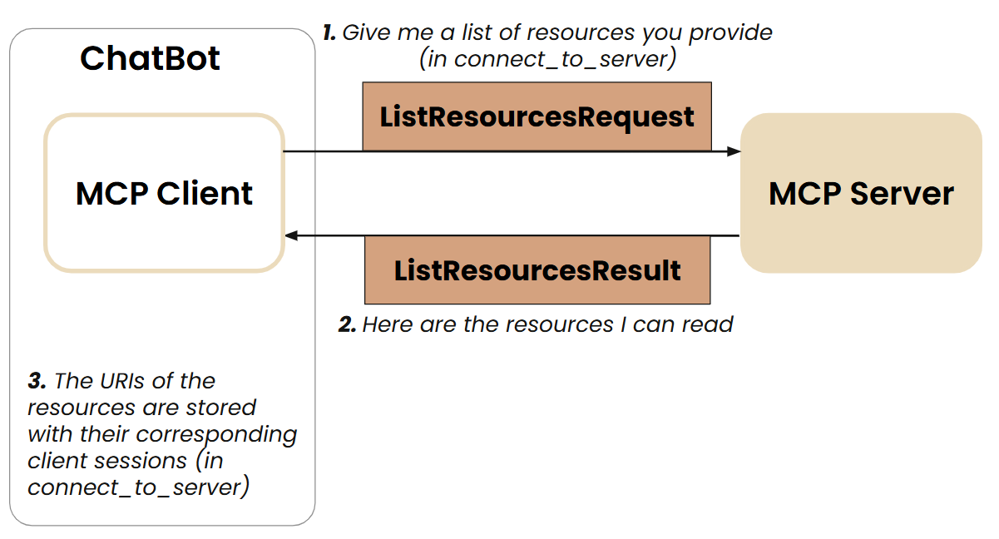
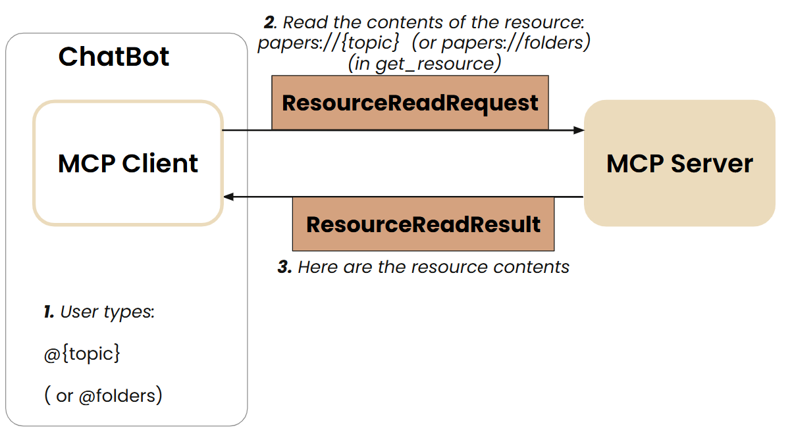

Adding Prompt & Resource Features
In the previous exercise, you created an MCP server that provides only tools. In this lesson, you are provided with an updated file for the research server file which now provides a prompt template and 2 resources features in addition to the 2 tools. You are also provided with an updated file for the mcp chatbot file where the MCP client exposes the prompt and resources for the user to use. The files are provided in the 5-PromptandResource folder.
Defining Resources and Prompts in the MCP Server - Optional Reading
Resources
You learned from exercise 1 that the research server saves the information of the researched papers in a json file called papers_info.json, which is stored under a folder labeled with the topic name. All the topics are stored under the papers directory. If you check the papers folder provided to you under 5-PromptandResource, you will find two folders labeled ai_interpretability and llm_reasoning, and in each folder, you have papers_info.json file.
Resources are read-only data that an MCP server can expose to the LLM application. Resources are similar to GET endpoints in a REST API - they provide data but shouldn’t perform significant computation or have side effects. For example, the resource can be a list of folders within a directory or the content of a file within a folder. Here, the MCP server provides two resources: - list of available topic folders under the papers directory; - the papers’ information stored under a topic folder.
Here’s a code snippet that shows how resources are defined in the MCP server again using FastMCP (with the use of the decorator @mcp.resource(uri)). You can find the complete code in the 5-PromptandResource folder. The URI defined inside @mcp.resource() is used to uniquely identify the resource and, as a server developer, you can customize the URI. But in general, it follows this scheme: sth://xyz/xcv . In this example, two types of URI were used: - static URI: papers://folders (which represents the list of available topics) - dynamic URI: papers://{topic} (which represents the papers’ information under the topic specified by the client during runtime)
@mcp.resource("papers://folders")
def get_available_folders() -> str:
"""
List all available topic folders in the papers directory.
This resource provides a simple list of all available topic folders.
"""
folders = []
# Get all topic directories
if os.path.exists(PAPER_DIR):
for topic_dir in os.listdir(PAPER_DIR):
topic_path = os.path.join(PAPER_DIR, topic_dir)
if os.path.isdir(topic_path):
papers_file = os.path.join(topic_path, "papers_info.json")
if os.path.exists(papers_file):
folders.append(topic_dir)
# Create a simple markdown list
content = "# Available Topics\n\n"
if folders:
for folder in folders:
content += f"- {folder}\n"
content += f"\nUse @{folder} to access papers in that topic.\n"
else:
content += "No topics found.\n"
return content
@mcp.resource("papers://{topic}")
def get_topic_papers(topic: str) -> str:
"""
Get detailed information about papers on a specific topic.
Args:
topic: The research topic to retrieve papers for
"""
topic_dir = topic.lower().replace(" ", "_")
papers_file = os.path.join(PAPER_DIR, topic_dir, "papers_info.json")
if not os.path.exists(papers_file):
return f"# No papers found for topic: {topic}\n\nTry searching for papers on this topic first."
try:
with open(papers_file, 'r') as f:
papers_data = json.load(f)
# Create markdown content with paper details
content = f"# Papers on {topic.replace('_', ' ').title()}\n\n"
content += f"Total papers: {len(papers_data)}\n\n"
for paper_id, paper_info in papers_data.items():
content += f"## {paper_info['title']}\n"
content += f"- **Paper ID**: {paper_id}\n"
content += f"- **Authors**: {', '.join(paper_info['authors'])}\n"
content += f"- **Published**: {paper_info['published']}\n"
content += f"- **PDF URL**: [{paper_info['pdf_url']}]({paper_info['pdf_url']})\n\n"
content += f"### Summary\n{paper_info['summary'][:500]}...\n\n"
content += "---\n\n"
return content
except json.JSONDecodeError:
return f"# Error reading papers data for {topic}\n\nThe papers data file is corrupted."Prompt Template
Server can also provide a prompt template. You can define this feature in the MCP server using the decorator @mcp.prompt() as shown in the code snippet below. MCP will use generate_search_prompt as the prompt name, infer the prompt arguments from the function’s argument and the prompt’s description from the doc string.
Using Resources and Prompts in the MCP Chatbot
The chatbot is updated to enable users to interact with the prompt using the slash command: - Users can use the command /prompts to list the available prompts - Users can use the command /prompt <name> <arg1=value1> to invoke a particular prompt
The chatbot also enables users to interact with the resources using the @ character: - Users can use the command @folders to see available topics - Users can use the command @topic to get papers info under that topic
Make sure to check the updated code in the mcp_project folder. There’s a couple of newly added methods (get_resource, execute_prompt, list_prompts). Here’s a brief summary of the updates added to the chatbot:
In
connect_to_server: the client requests from the server to list the resources and prompt templates they provide (in addition to the tools request). The resource URIs and the prompt names are stored in the MCP chatbot.

In
chat_loop: the user’s input is checked to see if the user has used any of the slash commands or @ options.If the user types:
@foldersor@topicthen the newly added methodget_resourceis called where the request is sent to the server.
If the user types:
/prompts, then the newly added methodlist_promptsis called.If the user types:
/prompt <name> <arg1=value1>, then the newly added methodexecute_promptis called where the request is sent to the server:
and the prompt is passed to the LLM.
Otherwise the query is processed by the LLM.
Running the MCP Chatbot
Terminal Instructions
- Open a terminal
- Navigate to the
5-PromptandResourcedirectory:cd 5-PromptandResourceuv init
- Activate the virtual environment:
uv venvsource .venv/bin/activate
- Install the additional dependencies:
uv add mcp arxiv openai
- Run the chatbot:
uv run mcp_chatbot.py
- To exit the chatbot, type
quit.
Make sure to interact with the chatbot. Here are some query examples: - /prompts - /prompt generate_search_prompt topic=ai interpretability num_papers=2 - @folders - @ai_interpretability
🚨 Different Run Results: The output generated by AI chat models can vary with each execution due to their dynamic, probabilistic nature. Don’t be surprised if your results differ from others.